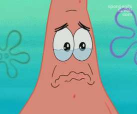

Você adolescente SAD do século XXI, pode estar propenso à sofrer com sintomas da epidemia que anda sendo muito alastrada, mas conhecida como "GADO".
Mas, para tudo existe solução, e para tratar os sintomas de gadisse e conseguir reverter essa situação para algo que te beneficie, confie nos astros e se joga! Se os astros indicarem um match VAI COM TUDO, senão... Esquece amigo(a), é melhor não sofrer, bola pra frente!
Os astros disseram que:
*** Escreva os signos com letra minúscula e sem acento ***
Não se preocupe, é só um fase (ou não hehe).
Avalie seus padrões. Nunca te valorizou = sem tempo irmão!Reserve um momento para concentrar-se em autoconsciência. Olhe para si mesmo(a) o mais objetivamente possível. Havia algo no relacionamento que era seguro por ser irreal? Será que a garantia de que você nunca vai se machucar devido ao fato de que não há compromisso lhe deixa tranquilo(a)? Se isso chega perto da verdade, então isso tem tudo a ver com você e nada a ver com essa outra pessoa. Ela é apenas um símbolo para você.
Seja feliz! É evidente que esta relação não atendia às suas necessidades, ou se você não sentiria a necessidade de sair dela. Deixe essa realidade entrar na sua cabeça. A pessoa com quem você se relacionava não atendia às suas necessidades, no entanto, outra irá. A única coisa é que, a fim de encontrar outra pessoa, você precisa esquecer a atual
Não fique esperando que ela caia do céu.Não espere sentado(a) com esperanças que as coisas vão mudar. Você ficará esperando muito, muito tempo. De modo geral, a melhor maneira de prever o comportamento futuro é olhar para o comportamento passado. Desde que o comportamento passado levou a mágoa, por que o comportamento futuro seria diferente? Isso mesmo, ele não será.
Não se culpe.Desejar ter feito algo diferente, ter agido de forma diferente, ter dito algo diferente é inútil. Você é quem você é e se as coisas não deram certo, então é porque não deveriam ter dado. Mudar a si mesmo é um processo desgastante que só resulta em ressentimento e fadiga. Culpar-se por ser quem você é bobagem! Quem mais você deveria ser?!